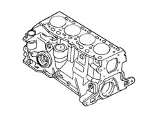
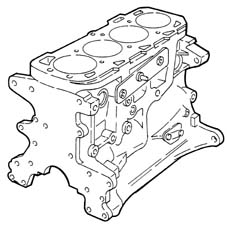

Introduction - ENGINE CRANKCASE
- Path
- Descriptions > 10 ENGINE UNIT > 1012 ENGINE CRANKCASE > Introduction - ENGINE CRANKCASE
- Kind
- system description
- Applies to
- all engines; all production periods
- Interactive page
- https://sloeber94.github.io/elrnDB-fMltpl/en/#/2892418
Applies to: engines: 1.6 16v; all production periods
The engine block is cast iron, with high mechanical strength.
The crankshaft is supported by means of five main bearings.
The cylinders are formed directly in the engine block, and are graded into three sizes plus one oversize.
There are special channels in the engine block walls which allow the flow of coolant and lubricating oil.

Applies to: engines: 1.9 JTD 8V; all production periods
The cylinder block is made from spheroidal graphite cast iron with closed-deck type integral cylinder liners.
The crankshaft is supported by five main bearings.
There are special channels in the engine block walls which allow the flow of coolant and lubricating oil.
There is a jet in the lower section which sprays oil to cool the piston skirt and lubricate the gudgeon pin.
